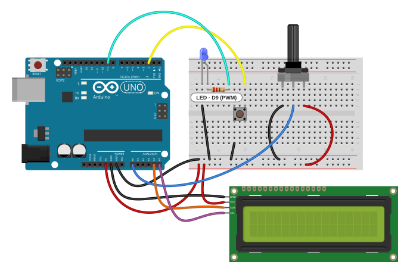

01과제
결과 요약
- ml5.js handPose가 찾은 손 관절 21개 중 엄지 끝과 검지 끝 사이의 실제 거리(cm)를 잰다. 손이 카메라에서 멀어져도 값이 같다.
- 중지·약지·새끼손가락을 접은 동안에만 슬라이더가 따라온다. 손을 펴거나 화면 밖으로 빼면 그 밝기에서 멈춘다.
- 손떨림은 1€ 필터로 줄였다. 가만히 있으면 값이 안정되고, 빠르게 움직이면 바로 따라온다.
- Arduino는 받은 값을 CIE 1931 밝기 공식으로 PWM 값으로 바꾼다. 손가락을 반쯤 벌리면 LED가 눈으로 보기에 반쯤 밝도록 계산한다.
02전체 흐름
- 웹캠
- ml5 handPose (관절 21개, 3D 좌표)
- 엄지–검지 거리 cm
- 1€ 필터
- p5 슬라이더 0~255
- Web Serial
LEVEL:값 - Arduino 밝기 공식
- D9 PWM → LED
브라우저와 Arduino는 9600 baud로 텍스트를 한 줄씩 주고받는다. 이번 과제용으로 메시지를 새로 정했다.
| 방향 | 메시지 | 뜻 |
|---|---|---|
| 웹 → Arduino | LEVEL:0~LEVEL:255 | 슬라이더 값(눈에 보이는 밝기 단계) |
| Arduino → 웹 | READY | 리셋이 끝나 명령을 받을 수 있음 |
| Arduino → 웹 | PWM:0~PWM:255 | 실제로 D9에 쓴 PWM 값. 웹 화면에 표시한다. |
| Arduino → 웹 | ERR:내용 | 형식이 틀린 줄이라 무시함 |
03설계
1. 간격은 화면 픽셀이 아니라 실제 거리로 잰다
화면에서 두 손끝 사이 픽셀 수를 재면, 같은 손 모양이라도 손이 카메라에 가까우면 커지고 멀면 작아진다. 손을 옆으로 돌려도 줄어든다. ml5 handPose는 관절마다 화면 좌표(keypoints)와 함께 손 중심을 기준으로 한 3D 좌표(keypoints3D, 단위 m)를 준다. 이 3D 좌표로 엄지 끝(4번)과 검지 끝(8번) 사이 거리를 구하면 손의 위치와 방향에 거의 상관없이 같은 값이 나온다.
2 cm 이하는 0, 10 cm 이상은 255로 하고 그 사이는 직선으로 나눴다.
2. 세 손가락을 접은 동안에만 조절한다
손가락 간격이 언제나 슬라이더를 움직이면, 원하는 밝기를 맞춘 뒤 손을 내리는 동안 간격이 바뀌어 값이 틀어진다. 그래서 중지·약지·새끼손가락이 모두 접혀 있을 때만 조절한다. 손가락 끝이 가운데 마디(PIP)보다 손목에 더 가까우면 접힌 것으로 본다. 곧게 편 손가락은 끝이 항상 그 마디보다 멀다. 이것도 3D 좌표로 비교하므로 손을 기울여도 판단이 같다.
화면에는 세 손끝에 점을 찍어, 접히면 초록, 펴져 있으면 회색으로 보여 준다.
3. 손떨림은 1€ 필터로 줄인다
손을 가만히 두어도 인식된 관절 위치는 조금씩 떨린다. 단순히 이전 값과 섞는 방식은 많이 섞으면 늦게 따라오고, 적게 섞으면 떨림이 남는다. 1€(One Euro) 필터(Casiez·Roussel·Vogel, CHI 2012)는 값이 변하는 속도를 보고 섞는 정도를 바꾼다. 느리게 움직이면 강하게 걸러 떨림을 없애고, 빠르게 움직이면 약하게 걸러 바로 따라간다.
4. 밝기는 눈에 보이는 대로 바꾼다
지난 과제(p5 슬라이더) 고찰 3에서, PWM 값을 그대로 올리면 어두운 쪽에서는 밝기가 크게 바뀌고 밝은 쪽에서는 거의 그대로 보인다고 적었다. 이번에는 슬라이더 값을 '눈에 보이는 밝기 단계'로 보고, Arduino가 CIE 1931 밝기(L*) 공식으로 PWM 값을 계산한다. 슬라이더 128(가운데)은 PWM 47이 된다.
5. Arduino가 준비된 뒤에 보낸다
Uno는 시리얼 포트가 열리면 리셋되고, 약 1~2초 동안 들어온 내용을 받지 못한다. 그래서 Arduino는 준비가 끝나면 READY를 보내고, 웹은 그 뒤에 현재 슬라이더 값을 보낸다.
6. 전송은 한 번에 하나, 밀린 값은 최신 값만
손 인식은 1초에 수십 번 값을 낸다. 앞 전송이 끝나기 전에 바뀐 값은 하나만 남겨 두었다가(가장 최근 값) 앞 전송이 끝나면 보낸다. 오래된 값이 줄줄이 밀려 LED가 늦게 따라오는 일이 없다.
dutyForLevel()이 계산한 값이다. 슬라이더 0~4는 PWM 0이 된다. 8비트 PWM으로는 그보다 어두운 밝기를 낼 수 없기 때문이다.04회로와 연결도
수업 회로를 그대로 쓰고 선 하나만 옮겼다. 수업 회로의 LED는 D13 → 220 Ω → LED(+), (−) → GND로 연결되어 있다. 그런데 D13은 PWM이 없어 analogWrite()로 켜고 끄는 것만 된다(값 128 미만은 꺼짐, 이상은 켜짐). 그래서 D13에 꽂힌 LED 선을 PWM 핀인 D9로 옮겼다. LED는 파랑 하나만 쓰고(지난 과제에서 더한 두 번째 LED는 뺐다), 부품을 새로 더하지 않았다. 나머지 부품(버튼, 가변저항, LCD)은 꽂힌 채로 두지만 이번 스케치에서는 쓰지 않는다. 실제 보드에서는 LED 짧은 다리 쪽 줄을 GND 전원 줄 대신 Arduino GND 핀에 바로 연결했다(고찰 4).



핀 연결
| Arduino | 연결 | 이번 스케치 |
|---|---|---|
| D9 (~) | 하늘색 선 → 220 Ω → 파랑 LED(+), (−) → GND | PWM 밝기 (D13에서 옮김) |
| USB | 노트북과 연결 | Web Serial 9600 baud |
| D13 | 비어 있음 | |
| D2, A0, A4/A5 | 수업 회로(버튼, 가변저항, LCD) | 사용 안 함 |
준비물
- 수업 회로 그대로 (Arduino Uno, LED, 220 Ω 저항 포함). 추가 부품 없음
- 웹캠이 있는 노트북
- Chrome 또는 Edge (Web Serial과 카메라를 쓰는 브라우저)
05코드
웹 쪽은 파일 넷이다. pinch.js는 손 모양 계산만 하고 p5·ml5를 부르지 않아서 브라우저 밖에서도 시험할 수 있다. serial-link.js는 Web Serial 연결과 줄 단위 송수신을 맡는다. sketch.js는 둘을 묶어 화면을 그린다. 모두 이번 과제를 위해 새로 썼다.
// Finger dimmer: the gap between thumb and index finger moves a p5 slider, and the slider's
// level goes to the Arduino (finger_led.ino) as "LEVEL:<0-255>".
// The slider follows the fingers only while middle, ring and pinky are folded; open the hand
// or take it away and the level stays where it was.
const BAUD_RATE = 9600;
const CLOSED_CM = 2; // thumb-index gap at or below this gives level 0
const OPEN_CM = 10; // gap at or above this gives level 255
const GAP_SMOOTHING = { minCutoff: 0.5, beta: 0.2, dCutoff: 1.0 }; // One Euro filter, gap in cm
const COLORS = { active: '#f59e0b', idle: '#e2e8f0', folded: '#22c55e', open: '#94a3b8' };
let video, slider, link;
let hand = null; // latest detected hand, or null
let gapCm = null; // smoothed thumb-index gap of that hand
let folded = []; // middle, ring, pinky
let gripping = false;
let arduinoReady = false;
let arduinoDuty = null; // PWM duty the Arduino last reported
let linkBusy = false;
const gapFilter = new OneEuroFilter(GAP_SMOOTHING);
async function setup() {
createCanvas(640, 480).parent('stage');
textFont('sans-serif');
// Ask for 4:3 so the frame is not stretched into the 640x480 canvas.
video = createCapture({ video: { width: 640, height: 480 }, audio: false }, { flipped: true });
video.size(640, 480);
video.hide();
slider = createSlider(0, 255, 0, 1).parent('slider-slot').id('level');
slider.input(levelChanged);
link = new SerialLink(BAUD_RATE, arduinoSaid, arduinoClosed);
select('#connect').mousePressed(toggleArduino);
if (!('serial' in navigator)) showLink('이 브라우저는 Web Serial을 지원하지 않습니다. Chrome이나 Edge로 여세요.');
const handPose = await ml5.handPose({ maxHands: 1, flipped: true });
handPose.detectStart(video, handsFound);
select('#hint').html('엄지와 검지만 펴고 나머지 세 손가락을 접으면 조절됩니다.');
}
function handsFound(results) {
hand = results[0] ?? null;
if (!hand) {
gapFilter.reset();
gripping = false;
return;
}
gapCm = gapFilter.filter(pinchGapCm(hand), performance.now() / 1000);
folded = foldedFingers(hand);
gripping = folded.every(Boolean);
if (!gripping) return;
const level = gapToLevel(gapCm, CLOSED_CM, OPEN_CM);
if (level === Number(slider.value())) return;
slider.value(level);
levelChanged();
}
function levelChanged() {
select('#level-out').html(slider.value() + ' / 255');
if (arduinoReady) link.sendLatest('LEVEL:' + slider.value());
}
async function toggleArduino() {
if (linkBusy) return;
linkBusy = true;
try {
if (link.isOpen) {
await link.close();
} else {
await link.open();
arduinoReady = false;
showLink('연결됨, Arduino 준비 기다리는 중...');
}
} catch (error) {
showLink(error.name === 'NotFoundError' ? '포트를 고르지 않았습니다.' : '연결 실패: ' + error.message);
} finally {
linkBusy = false;
select('#connect').html(link.isOpen ? 'Arduino 연결 끊기' : 'Arduino 연결');
}
}
// The board resets when the port opens and prints READY when it can listen again.
function arduinoSaid(line) {
if (line === 'READY') {
arduinoReady = true;
showLink('연결됨');
levelChanged();
return;
}
const duty = line.match(/^PWM:(\d+)$/);
if (duty) {
arduinoDuty = Number(duty[1]);
select('#duty-out').html('Arduino PWM ' + arduinoDuty + ' / 255');
return;
}
showLink('Arduino: ' + line);
}
function arduinoClosed() {
arduinoReady = false;
arduinoDuty = null;
showLink('연결 안 됨');
select('#duty-out').html('');
select('#connect').html('Arduino 연결');
}
function showLink(message) {
select('#link-state').html(message);
}
function draw() {
image(video, 0, 0, width, height);
if (hand) drawHand(hand);
drawBadge();
}
function drawHand(h) {
const k = h.keypoints;
[12, 16, 20].forEach((tip, i) => {
noStroke();
fill(folded[i] ? COLORS.folded : COLORS.open);
circle(k[tip].x, k[tip].y, 14);
});
const thumb = k[4];
const index = k[8];
const color = gripping ? COLORS.active : COLORS.idle;
stroke(color);
strokeWeight(gripping ? 5 : 2);
line(thumb.x, thumb.y, index.x, index.y);
noFill();
circle(thumb.x, thumb.y, 22);
circle(index.x, index.y, 22);
const label = gapCm.toFixed(1) + ' cm';
const x = (thumb.x + index.x) / 2 + 16;
const y = (thumb.y + index.y) / 2;
textSize(16);
noStroke();
fill(0, 160);
rect(x - 6, y - 15, textWidth(label) + 12, 24, 6);
fill(color);
text(label, x, y + 2);
}
function drawBadge() {
const message = !hand ? '손을 보여 주세요'
: gripping ? '조절 중'
: '고정 (세 손가락을 접으면 조절)';
textSize(18);
noStroke();
fill(0, 170);
rect(12, 12, textWidth(message) + 24, 34, 8);
fill(gripping ? COLORS.active : 255);
text(message, 24, 35);
}// Hand geometry for the finger dimmer. Nothing here calls p5 or ml5, so it runs in tests too.
//
// Landmarks follow MediaPipe's 21-point hand layout. ml5 handPose gives each hand both
// `keypoints` (pixels on the video) and `keypoints3D` (world coordinates in metres around the
// hand's centre). Distances here use keypoints3D: they keep the hand's real size whether it is
// near the camera or far away, and do not shrink when the hand turns sideways.
const WRIST = 0;
const THUMB_TIP = 4;
const INDEX_TIP = 8;
const CURLING_FINGERS = [ // middle, ring and pinky as [PIP joint, fingertip]
[10, 12],
[14, 16],
[18, 20],
];
function distance3D(a, b) {
return Math.hypot(a.x - b.x, a.y - b.y, a.z - b.z);
}
function pinchGapCm(hand) {
return 100 * distance3D(hand.keypoints3D[THUMB_TIP], hand.keypoints3D[INDEX_TIP]);
}
// A finger is folded when its tip is nearer the wrist than its middle joint;
// a straight finger always reaches past that joint.
function foldedFingers(hand) {
const k = hand.keypoints3D;
return CURLING_FINGERS.map(([pip, tip]) => distance3D(k[tip], k[WRIST]) < distance3D(k[pip], k[WRIST]));
}
function isGripping(hand) {
return foldedFingers(hand).every(Boolean);
}
function gapToLevel(gapCm, closedCm, openCm) {
const t = (gapCm - closedCm) / (openCm - closedCm);
return Math.round(255 * Math.min(1, Math.max(0, t)));
}
// One Euro filter: Casiez, Roussel and Vogel, "1 Euro Filter", CHI 2012.
// A low-pass filter whose cutoff frequency rises with the signal's speed, so a still hand
// reads steady and a moving hand is followed without noticeable lag.
class OneEuroFilter {
constructor({ minCutoff, beta, dCutoff }) {
this.minCutoff = minCutoff; // Hz, smoothing while still
this.beta = beta; // how fast the cutoff rises with speed
this.dCutoff = dCutoff; // Hz, smoothing of the speed estimate
this.reset();
}
reset() {
this.time = null;
}
filter(value, timeSeconds) {
if (this.time === null) {
this.time = timeSeconds;
this.raw = value;
this.value = value;
this.speed = 0;
return value;
}
const dt = timeSeconds - this.time;
if (dt <= 0) return this.value;
this.time = timeSeconds;
this.speed += smoothingFactor(this.dCutoff, dt) * ((value - this.raw) / dt - this.speed);
this.raw = value;
const cutoff = this.minCutoff + this.beta * Math.abs(this.speed);
this.value += smoothingFactor(cutoff, dt) * (value - this.value);
return this.value;
}
}
// Weight of the new sample in an exponential low-pass filter with the given cutoff frequency.
function smoothingFactor(cutoffHz, dt) {
const r = 2 * Math.PI * cutoffHz * dt;
return r / (r + 1);
}// Line-based link to the Arduino over Web Serial (Chrome and Edge).
//
// Lines are written one at a time. While a write is in flight only the newest pending line is
// kept, so a fast-moving hand never builds a backlog of stale levels behind the 9600-baud link.
class SerialLink {
constructor(baudRate, onLine, onClose) {
this.baudRate = baudRate;
this.onLine = onLine; // called with each received line, trimmed
this.onClose = onClose; // called once each time the link closes, including on unplug
this.port = null;
this.encoder = new TextEncoder();
}
get isOpen() {
return this.port !== null;
}
// Shows the browser's port picker, so it must run inside a click handler.
async open() {
const port = await navigator.serial.requestPort();
await port.open({ baudRate: this.baudRate });
this.port = port;
this.writer = port.writable.getWriter();
this.pending = null;
this.flushing = null;
this.reading = this.readLines(port);
}
async close() {
const port = this.port;
if (!port) return;
this.port = null;
this.pending = null;
await this.reader.cancel().catch(() => {});
await this.reading;
await this.flushing;
this.writer.releaseLock();
await port.close().catch(() => {});
this.onClose();
}
sendLatest(line) {
if (!this.port) return;
this.pending = line;
this.flushing ??= this.flush();
}
async flush() {
try {
while (this.pending !== null) {
const line = this.pending;
this.pending = null;
await this.writer.write(this.encoder.encode(line + '\n'));
}
} catch {
this.close(); // a failed write means the device is gone
} finally {
this.flushing = null;
}
}
async readLines(port) {
const decoder = new TextDecoder();
let buffered = '';
// A framing or overrun error (likely while the board resets) only replaces port.readable,
// so reading resumes on the new stream. port.readable is null once the device is gone.
while (this.port === port && port.readable) {
this.reader = port.readable.getReader();
try {
for (;;) {
const { value, done } = await this.reader.read();
if (done) break;
buffered += decoder.decode(value, { stream: true });
const lines = buffered.split('\n');
buffered = lines.pop();
for (const line of lines) {
if (line.trim()) this.onLine(line.trim());
}
}
} catch {
// Retried by the loop condition above.
} finally {
this.reader.releaseLock();
}
}
if (this.port === port) this.close();
}
}<!doctype html>
<html lang="ko">
<head>
<meta charset="utf-8">
<meta name="viewport" content="width=device-width, initial-scale=1">
<meta name="robots" content="noindex, nofollow">
<title>손가락 LED 조절기</title>
<link rel="icon" href="data:image/svg+xml,%3Csvg xmlns='http://www.w3.org/2000/svg' viewBox='0 0 64 64'%3E%3Crect width='64' height='64' rx='14' fill='%230b1f3a'/%3E%3Ccircle cx='22' cy='40' r='7' fill='%23f59e0b'/%3E%3Ccircle cx='42' cy='22' r='7' fill='%23f59e0b'/%3E%3Cpath d='M22 40 42 22' stroke='%23f59e0b' stroke-width='4'/%3E%3C/svg%3E">
<style>
:root { color-scheme: dark; }
body { margin: 0; background: #0b1220; color: #e2e8f0; font: 16px/1.5 system-ui, sans-serif; }
main { max-width: 640px; margin: 0 auto; padding: 16px; }
h1 { font-size: 20px; margin: 0 0 12px; }
#stage canvas { display: block; width: 100% !important; height: auto !important; border-radius: 12px; background: #000; }
.panel { margin-top: 14px; padding: 14px 16px; border-radius: 12px; background: #111a2e; }
.row { display: flex; align-items: center; gap: 12px; flex-wrap: wrap; }
#slider-slot { flex: 1; min-width: 200px; }
#level { width: 100%; accent-color: #f59e0b; }
#level-out { font-variant-numeric: tabular-nums; min-width: 72px; text-align: right; font-weight: 700; }
button { font: inherit; padding: 8px 14px; border-radius: 8px; border: 0; background: #2563eb; color: #fff; cursor: pointer; }
#link-state, #duty-out, #hint { color: #94a3b8; font-size: 14px; }
#duty-out { font-variant-numeric: tabular-nums; }
a { color: #93c5fd; }
</style>
<script src="https://cdn.jsdelivr.net/npm/p5@2.3.4/lib/p5.min.js"></script>
<script src="https://cdn.jsdelivr.net/npm/ml5@1.4.0/dist/ml5.min.js"></script>
</head>
<body>
<main>
<h1>손가락 간격으로 LED 밝기 조절</h1>
<div id="stage"></div>
<div class="panel">
<div class="row">
<label for="level">LED 밝기</label>
<div id="slider-slot"></div>
<span id="level-out">0 / 255</span>
</div>
<p id="hint">손 인식 모델을 불러오는 중입니다...</p>
</div>
<div class="panel row">
<button id="connect" type="button">Arduino 연결</button>
<span id="link-state">연결 안 됨</span>
<span id="duty-out"></span>
</div>
<p><a href="../">← 설명 글로 돌아가기</a></p>
</main>
<script src="pinch.js"></script>
<script src="serial-link.js"></script>
<script src="sketch.js"></script>
</body>
</html>// Sets the brightness of the LED on D9 from "LEVEL:<0-255>" lines sent by the p5 page.
//
// The level is perceived brightness, not PWM duty. The eye is far more sensitive to changes
// in dim light than in bright light, so a linear duty makes the bottom of the slider jump and
// the top barely change. The CIE 1931 lightness formula converts the level to duty instead,
// so equal finger movements look like equal steps of brightness.
//
// Replies (9600 baud, one line each):
// READY after reset; the board resets whenever the port is opened
// PWM:<duty> the duty actually written for a valid LEVEL line
// ERR:<reason> the line was ignored
const byte LED_PIN = 9; // PWM-capable pin (~)
const byte MAX_LINE_LENGTH = 15; // "LEVEL:255" is 9 characters
char line[MAX_LINE_LENGTH + 1];
byte lineLength = 0;
bool lineTooLong = false;
byte dutyForLevel(byte level) {
float lightness = level * 100.0 / 255.0; // CIE L*, 0-100
float luminance = lightness <= 8.0 ? lightness / 903.3 // linear segment near black
: pow((lightness + 16.0) / 116.0, 3);
return (byte)(luminance * 255.0 + 0.5);
}
// Accepts exactly "LEVEL:" followed by 1-3 digits with a value of at most 255.
bool parseLevel(const char *text, byte *level) {
const char *digits = text + 6;
if (strncmp(text, "LEVEL:", 6) != 0 || !isdigit(digits[0])) return false;
char *end;
long value = strtol(digits, &end, 10);
if (*end != '\0' || end - digits > 3 || value > 255) return false;
*level = value;
return true;
}
void handleLine() {
byte level;
if (!parseLevel(line, &level)) {
Serial.print("ERR:");
Serial.println(line);
return;
}
byte duty = dutyForLevel(level);
analogWrite(LED_PIN, duty);
Serial.print("PWM:");
Serial.println(duty);
}
void setup() {
pinMode(LED_PIN, OUTPUT);
analogWrite(LED_PIN, 0);
Serial.begin(9600);
Serial.println("READY");
}
void loop() {
while (Serial.available()) {
char c = Serial.read();
if (c == '\r') continue;
if (c != '\n') {
if (lineLength < MAX_LINE_LENGTH) line[lineLength++] = c;
else lineTooLong = true;
continue;
}
line[lineLength] = '\0';
if (lineTooLong) Serial.println("ERR:too long");
else if (lineLength > 0) handleLine();
lineLength = 0;
lineTooLong = false;
}
}06사용법
- 수업 회로에서 D13에 꽂힌 LED 선을 D9로 옮긴다.
- Arduino IDE로
finger_led.ino를 Uno에 올린다. - Chrome이나 Edge로 앱을 열고 카메라를 허용한다. 손 인식 모델을 불러오는 데 몇 초 걸린다.
- Arduino 연결을 누르고 Uno의 포트를 고른다. '연결됨'이 뜨면 준비가 끝난 것이다.
- 손을 카메라에 보이고 중지·약지·새끼손가락을 접는다. 세 손끝 점이 초록이 되고 '조절 중'이 뜬다.
- 엄지와 검지 사이를 벌리면 밝아지고 좁히면 어두워진다. 손을 펴거나 화면 밖으로 빼면 그 밝기가 유지된다. 마우스로 슬라이더를 끌어도 된다.
07검증
Arduino Uno 컴파일
Arduino IDE의 arduino-cli로 Uno 대상 컴파일에 성공했다. 프로그램 저장 공간 5,590바이트(17%), 전역 변수 244바이트(11%)다.
브라우저에서 손 인식
Chrome에 가짜 웹캠으로 손이 찍힌 영상을 넣고 앱을 열었다. 모델이 약 5초 만에 준비되었고, 손을 찾으면 관절 21개의 3D 좌표가 들어왔다. 가변저항 손잡이를 잡은 손에서 엄지–검지 거리가 2.8~5.4 cm로 나왔다. 콘솔 오류는 없었다.
실제 Uno와 노트북 웹캠
스케치를 Uno에 올리고 Chrome에서 앱을 연결했다. 세 손가락을 접으면 '조절 중'이 되고, 엄지와 검지 간격에 따라 슬라이더와 LED 밝기가 함께 바뀌었다. 처음에는 LED가 켜지지 않았는데 원인은 회로였다(고찰 4).
PC에서 Arduino 스케치에 메시지 넣어 보기 (13항목 통과)
스케치를 PC에서 그대로 컴파일하고, 시리얼 입력과 핀 출력만 흉내 내어 여러 줄을 넣었다.
| 넣은 메시지 | 결과 | 판정 |
|---|---|---|
| (전원 켜짐) | D9 = 0, READY 응답 | 통과 |
LEVEL:255 / LEVEL:0 / LEVEL:128 | PWM 255 / 0 / 47, 같은 값으로 PWM: 응답 | 통과 |
| 0~255 전체 | 256개 모두 CIE 공식과 같고, 값이 커질수록 PWM이 줄지 않음 | 통과 |
LEVEL:200\r\n | 줄 끝 \r을 무시하고 처리 | 통과 |
LEV + EL:6 + 4\n 나눠 도착 | 한 줄로 합쳐 64로 처리 | 통과 |
| 한 번에 두 줄 | 둘 다 차례로 처리 | 통과 |
LEVEL:256, LEVEL:, LEVEL:12a, LEVEL:-1, LEVEL:␣5, LEVEL:0255, level:5, PWM:100 | ERR: 응답, LED 그대로 | 통과 |
| 25글자짜리 긴 줄, 그다음 정상 줄 | ERR:too long, 다음 줄은 정상 처리 | 통과 |
| 빈 줄 | 응답 없음 | 통과 |
손 모양 계산과 1€ 필터 (15항목 통과)
pinch.js를 Node.js에서 그대로 실행했다. 손 관절 좌표를 직접 만들어 넣었다(손바닥 9 cm).
| 확인한 것 | 결과 | 판정 |
|---|---|---|
| 엄지–검지 7 cm로 만든 손 | 7.00 cm | 통과 |
| 편 손 / 세 손가락 접은 손 / 새끼만 편 손 | 조절 안 함 / 조절 / 조절 안 함 | 통과 |
| 손을 화면 안에서 120° 돌리고 카메라 쪽으로 60° 기울임 | 접힘 판단과 거리 7 cm가 그대로 | 통과 |
| 거리 → 슬라이더 값 | 2 cm 이하 0, 6 cm 128, 10 cm 이상 255 | 통과 |
| 6 cm에 ±0.4 cm 떨림, 2초 | 슬라이더 값 흔들림 폭 25 → 6 | 통과 |
| 0.3초 만에 3 → 9 cm로 벌림 | 멈춘 뒤 0.1초 안에 9 cm(±0.25)에 도달 | 통과 |
가짜 시리얼 포트로 전송 확인 (9항목 통과)
serial-link.js를 Node.js에서 실행하고, 전송 한 번에 10 ms 걸리는 가짜 포트를 붙였다.
| 상황 | 결과 | 판정 |
|---|---|---|
| 값 50개를 한꺼번에 보냄 | 첫 값과 마지막 값 2개만 전송, 동시에 두 번 쓰는 일 없음 | 통과 |
| 값을 천천히 20번 바꿈 | 20개 모두 순서대로 전송 | 통과 |
REA + DY\r\nPWM:4 + 7\r\n 나눠 받음 | READY, PWM:47 두 줄 | 통과 |
| 받는 중 통신 오류(리셋 중 생길 수 있음) | 연결을 끊지 않고 이어서 받음 | 통과 |
| USB를 뽑음 | 연결이 스스로 한 번 닫히고, 이후 전송은 무시 | 통과 |
| 전송 중에 연결 끊기 | 보내던 값은 마저 보내고 대기 값은 버린 뒤 포트를 닫음 | 통과 |
검사 코드가 실제로 잘못을 잡는지도 확인했다. 코드를 일부러 틀리게 바꾸면(오류 뒤 다시 받기 빼기, 전송 겹치기 허용, 2D 거리 쓰기, 화면 위아래만 보고 접힘 판단) 해당 항목이 실패한다. 검사 코드: tools/fingersim (ino_test.cpp, pinch_test.mjs, link_test.mjs)
08실제 동작


09고찰
1. 왜 3D 거리인가
화면 픽셀 거리를 쓰면서 손 크기 변화를 없애려면, 손바닥 길이처럼 손 안의 다른 길이로 나누는 방법이 있다. 하지만 손을 앞뒤로 기울이면 손바닥 길이는 줄어드는데 옆으로 벌린 엄지–검지 간격은 덜 줄어서 비율이 달라진다. 3D 좌표는 이런 기울기를 이미 반영한 값이라 나누기 없이 cm로 바로 쓸 수 있다. 다만 3D 좌표는 카메라 한 대의 사진에서 보통 손 크기를 가정해 추정한 값이다. 손이 아주 크거나 작으면 실제 cm와 다를 수 있고, 엄지가 검지 뒤에 가려지면 오차가 커진다. 그래서 cm 값을 화면에 띄워 두고 2 cm와 10 cm 기준을 손에 맞게 바꿀 수 있게 했다(CLOSED_CM, OPEN_CM).
2. 1€ 필터 값 고르기
필터에는 '가만히 있을 때 얼마나 걸러낼지'(minCutoff)와 '움직일 때 얼마나 빨리 풀어 줄지'(beta) 두 값이 있다. 같은 떨림과 같은 손동작을 넣고 여러 조합을 비교했다.
minCutoff | beta | 가만히 있을 때 흔들림(슬라이더 값) | 빠르게 벌린 뒤 따라오는 시간 |
|---|---|---|---|
| 0.3 | 0.02 | 4 | 1.3초 |
| 1.0 | 0.2 | 10 | 0.1초 |
| 0.5 | 0.2 | 6 | 0.1초 (사용) |
떨림을 가장 많이 줄인 조합은 손을 멈춘 뒤 1초 넘게 끌려와서 쓰기 답답하다. 고른 조합은 흔들림을 약 4분의 1(25 → 6, 전체 255의 2% 정도)로 줄이면서 반응 시간은 가장 빠른 조합과 같다. 넣은 떨림(±0.4 cm)은 가정한 값이라, 실제 웹캠에서 떨림이 더 크거나 작으면 다시 맞춰야 한다.
3. 조절 스위치를 손 모양으로 둔 이유
버튼이나 키보드로 조절을 켜고 끌 수도 있지만, 그러면 한 손은 손가락 모양을 만들고 다른 손은 키보드를 눌러야 한다. 세 손가락을 접는 동작은 같은 손으로 할 수 있고, 접힌 상태가 화면 점 색으로 바로 보인다. 대신 세 손가락을 덜 접으면 '고정'으로 남는다. 손끝이 가운데 마디보다 손목 쪽으로 들어와야 접힌 것으로 보기 때문이다.
4. 실제 회로에서 LED가 켜지지 않았던 일
처음 연결했을 때 손가락에 따라 화면의 'Arduino PWM' 값은 바뀌는데 LED는 계속 꺼져 있었다. Arduino가 실제로 쓴 PWM 값을 되돌려 보내게 해 두었으므로, 값이 바뀐다는 것은 명령이 도착해 D9에 출력되고 있다는 뜻이다. 그래서 코드가 아니라 회로를 의심했다. D9 선 끝을 5V에 꽂아도 켜지지 않아 회로 문제로 좁혀졌고, LED 짧은 다리 쪽을 브레드보드 GND 전원 줄 대신 Arduino GND 핀에 바로 연결하자 켜졌다. GND 전원 줄이 Arduino GND와 이어져 있지 않았던 것이다. 긴 브레드보드는 전원 줄이 가운데에서 끊어진 제품도 있어서, 전원 줄을 쓸 때는 실제로 이어져 있는지 먼저 확인해야 한다.
5. 한계
- 손 인식 속도는 노트북 성능에 따라 다르다. 인식이 느리면 1€ 필터도 띄엄띄엄 값을 받아 조금 더 늦게 따라온다.
- 8비트 PWM이라 아주 어두운 단계는 표현이 거칠다. 슬라이더 0~4는 모두 꺼짐이고, 5부터 PWM 1이 된다.
- 어두운 쪽을 더 잘게 나누려면 PWM 비트 수를 늘려야 하는데, Uno의
analogWrite()는 8비트(0~255)만 지원한다.